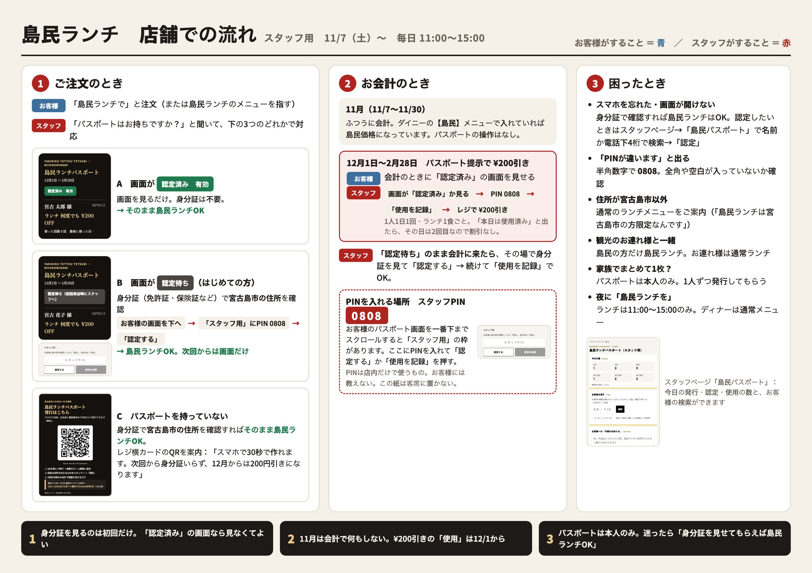

‹ 島民パスポート（スタッフ用）へ戻る
Resident Lunch · How To
島民ランチ 店舗での流れ
11/7（土）〜 毎日 11:00〜15:00 ／
お客様
がすること・
スタッフ
がすること
1
ご注文のとき
お客様
「島民ランチで」と注文（または島民ランチのメニューを指す）
スタッフ
「パスポートはお持ちですか？」と聞いて、下のA・B・Cで対応
A 画面が
認定済み 有効
画面を見るだけ。身分証は不要。
→ そのまま島民ランチOK
B 画面が
認定待ち
（はじめての方）
身分証（免許証・保険証など）で
宮古島市の住所
を確認。
お客様の画面を一番下へ
→
「スタッフ用」にPIN
→
「認定する」
→ 島民ランチOK。次回からは画面だけ
C パスポートを持っていない
身分証で
宮古島市の住所
を確認すれば
そのまま島民ランチOK
。
レジ横カードのQRを案内：「スマホで30秒で作れます。次回から身分証いらず、12月からは200円引きになります」
2
お会計のとき
11月（11/7〜11/30）
ふつうに会計。ダイニーの
【島民】
メニューで入れていれば島民価格になっています。パスポートの操作はなし。
12月1日〜2月28日 パスポート提示で ¥200引き
お客様
会計のときに「認定済み」の画面を見せる
スタッフ
画面が「認定済み」か見る
→
PIN
→
「使用を記録」
→
レジで ¥200引き
1人1日1回・ランチ1食ごと。「本日は使用済み」と出たら、その日は2回目なので割引なし。
スタッフ
「認定待ち」のまま会計に来たら
、その場で身分証を見て「認定する」→ 続けて「使用を記録」でOK。
PINを入れる場所 スタッフPIN
0808
お客様のパスポート画面を一番下までスクロールすると「スタッフ用」の枠があります。ここにPINを入れて「認定する」か「使用を記録」を押す。
PINは店内だけで使うもの。お客様には教えない・この画面をお客様に見せない。
3
困ったとき
スマホを忘れた・画面が開けない
身分証で確認すれば島民ランチはOK。認定したいときは「島民パスポート（スタッフ用）」で名前か電話下4桁で検索→「認定」
「PINが違います」と出る
半角数字で 0808。全角や空白が入っていないか確認
住所が宮古島市以外
通常のランチメニューをご案内（「島民ランチは宮古島市の方限定なんです」）
観光のお連れ様と一緒
島民の方だけ島民ランチ。お連れ様は通常ランチ
家族でまとめて1枚？
パスポートは本人のみ。1人ずつ発行してもらう
夜に「島民ランチを」
ランチは11:00〜15:00のみ。ディナーは通常メニュー
これだけは
1
身分証を見るのは初回だけ。「認定済み」の画面なら見なくてよい
2
11月は会計で何もしない。¥200引きの「使用」は12/1から
3
パスポートは本人のみ。迷ったら「身分証を見せてもらえば島民ランチOK」
1枚の図で見る

拡大して見る（別タブ）